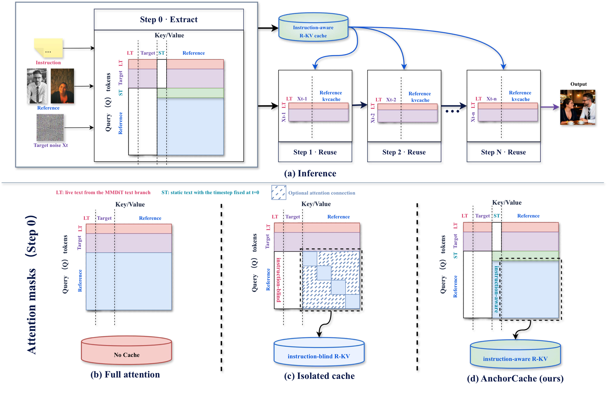
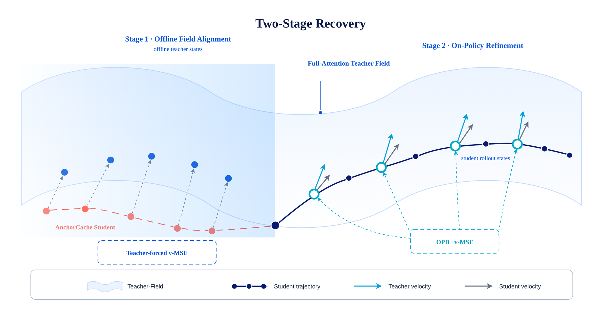
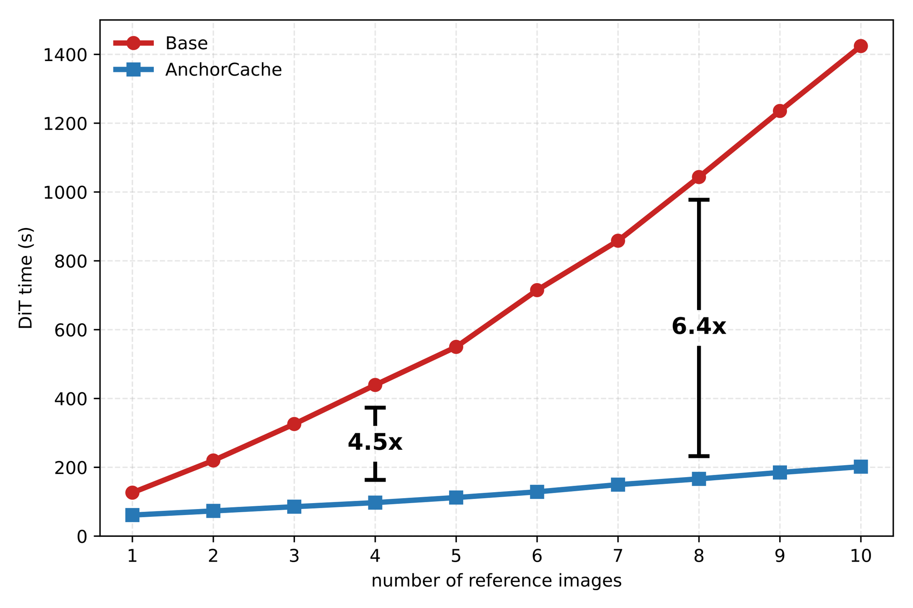
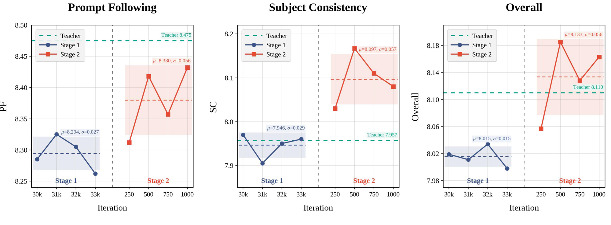

Abstract
In-context diffusion transformers concatenate instruction, target, and reference tokens into a single sequence for joint attention. Reference-side computation must be repeated at every denoising step, with computation growing rapidly as more references are added. Decoupling the reference tokens from the target enables exact K/V reuse across denoising steps. This isolation, however, prevents the reference tokens from attending to the instruction, degrading instruction following and reference fidelity. This trade-off cannot be resolved by attention mask design alone. We introduce AnchorCache, a parameter-free token layout and attention mask co-design that inserts static text anchors. The anchors condition the reference representations on the instruction during cache construction, after which the resulting reference K/V are reused exactly across denoising steps. This structural conversion initially degrades generation quality. We recover the lost performance with teacher-forced velocity distillation, followed by a short on-policy stage that queries the teacher at student-visited states. To our knowledge, this is the first use of on-policy distillation for architectural recovery in diffusion models. Across benchmarks spanning image, speech, and video generation, AnchorCache matches full-attention quality. Its efficiency gains increase with the reference context, reaching a 6.40× speedup in DiT inference.
Contributions
01
We introduce AnchorCache, a parameter-free token layout and attention mask co-design that makes reference K/V instruction-aware while preserving exact reuse across denoising steps, resolving a structural trade-off that cannot be addressed by attention-mask design alone.
02
We develop a two-stage architectural recovery procedure that combines teacher-forced velocity distillation with a short on-policy stage at student-visited states — to our knowledge, the first application of on-policy distillation to architectural recovery in diffusion models.
03
We demonstrate AnchorCache across image, speech, and video generation. It matches full-attention quality across task-specific benchmarks, while its efficiency gains increase with the reference context and DiT inference speedups reach 6.40×.
Method
Isolating the reference branch from the evolving target makes its K/V exactly cacheable, but also cuts it off from the instruction. Letting references attend to the live instruction does not help either: those states are contextualized by $X_t$, creating the path $X_t \rightarrow \mathrm{LT} \rightarrow \mathrm{R}$. AnchorCache adds a static copy of the instruction ($\mathrm{ST}$, fixed timestep $t_{\mathrm{ST}}=0$) that conditions the references once during cache construction and is then discarded.

Overview of AnchorCache. Top (a): static text anchors condition the reference branch once during cache construction. Only the resulting reference K/V are retained and reused across denoising steps. Bottom: attention structures for (b) full attention, (c) isolated cache, and (d) AnchorCache, where rows denote queries and columns denote keys and values.
Full attention
$[\mathrm{LT}; X_t; \mathrm{R}]$ jointly attend at every step.
Isolated cache
$\mathrm{R}$ attends only to itself; $X_t$ reads cached K/V.
AnchorCache (ours)
$[\mathrm{ST}, \mathrm{R}]$ form a static subgraph computed once.
Instruction-aware reference retrieval: conditioning is represented on both sides of the attention interaction.
$$q_X(X_t,c)^\top k_R(r) \quad\longrightarrow\quad q_X(X_t,c)^\top k_R(r,c)$$Two-Stage Architectural Recovery
Converting a pretrained full-attention model to the AnchorCache topology changes its information flow. We first recover quality with teacher-forced velocity distillation on data-derived interpolants, then run a short on-policy stage that queries the frozen full-attention teacher at states visited by the student's own sampler.

Two-stage architectural recovery. Stage 1 queries the teacher at data-derived interpolants. Stage 2 queries the same teacher at states visited by the student and corrects residual errors along the student's inference trajectory.
Stage 1 · Teacher-forced velocity distillation (30k steps)
Stage 2 · On-policy refinement (500 steps)
Showcase
Within each case, all methods use the same sampling settings and seed. Cases marked PAPER are the examples shown in the paper; the rest are additional examples. Click any image to enlarge.
Multi-Reference Generation · OmniContext
Qwen-Image-Edit-2511 with two or three reference images. Scores are per-sample VIEScore with GPT-4.1 as judge (PF / SC / Overall).
Instruction-Based Editing · GEdit-Bench
The paper's appendix shows a contiguous batch of ten examples, which also includes cases where the three outputs look alike.
In-Context Video Editing · OpenVE-Bench
Representative video-editing results generated by AnchorCache on OpenVE-Bench (MiniMax-H3). Each card plays the reference video (left) and the AnchorCache output (right). Click a card for a larger view.
PAPERExamples shown in the paper
Additional examples
Efficiency & Recovery

Scaling with the number of references. Under full attention, every additional reference is re-processed at every denoising step. AnchorCache computes the reference representations once and reuses the cached K/V, so its relative efficiency gain increases with the number of references (Qwen-Image-Edit, 20B).
Identical per-step cost to the isolated cache
Static text anchors only enter the one-time cache-construction subgraph $[\mathrm{ST}, \mathrm{R}]$. The extra cost relative to the isolated cache is $O\big(N_{\mathrm{ST}}d^2 + (2N_\mathrm{R}N_\mathrm{ST} + N_\mathrm{ST}^2)d\big)$, paid once and amortized over the whole trajectory.
With 8 reference images AnchorCache reaches 6.40×, nearly matching the 6.45× of the isolated cache, and combining it with SageAttention2 increases the speedup to 7.99×.
The construction introduces no learnable parameters and retains a regular attention layout compatible with optimized implementations such as FlashAttention.

Teacher-forced saturation and on-policy recovery. Starting from the same 30k Stage 1 checkpoint, continued teacher-forced training remains nearly saturated ($8.015\pm0.015$ Overall), while on-policy refinement reaches 8.057 after only 250 updates and 8.185 after 500, with every evaluated on-policy checkpoint exceeding the best continued teacher-forced checkpoint. Shaded regions denote mean ± standard deviation; the green dashed line indicates the full-attention teacher.
Quantitative Results
Highlighting follows the paper: filled = bold (best), underlined = second best. Speedup is measured over the complete DiT denoising trajectory relative to the corresponding full-attention model.
OmniImage Generation
| Model / Method | OmniContext | ImgEdit-Bench | GEdit-Bench | Efficiency | ||||
|---|---|---|---|---|---|---|---|---|
| PF ↑ | SC ↑ | Overall ↑ | Overall ↑ | SC ↑ | PQ ↑ | Overall ↑ | Speedup ↑ | |
| Qwen-Image-Edit | 8.550 | 7.867 | 8.119 | 4.324 | 8.097 | 7.303 | 7.574 | 1.00× |
| + Isolated cache | 8.155 | 7.490 | 7.680 | 4.219 | 7.911 | 7.290 | 7.475 | 6.45× |
| + AnchorCache | 8.418 | 8.167 | 8.185 | 4.351 | 8.059 | 7.269 | 7.540 | 6.40× |
| FLUX.2 9B (4 steps) | 8.602 | 8.043 | 8.230 | 3.919 | 7.650 | 7.376 | 7.341 | 1.00× |
| + Isolated cache | 8.545 | 7.527 | 7.895 | 3.873 | 7.331 | 7.452 | 7.132 | 2.91× |
| + AnchorCache | 8.665 | 8.053 | 8.258 | 3.949 | 7.785 | 7.431 | 7.437 | 2.86× |
Zero-shot TTS
| Method | Seed-TTS EN | Seed-TTS ZH | LibriSpeech-PC | Speedup ↑ | |||
|---|---|---|---|---|---|---|---|
| WER↓ | SIM-o↑ | WER↓ | SIM-o↑ | WER↓ | SIM-o↑ | ||
| OmniVoice | 1.62 | 0.7419 | 0.84 | 0.7779 | 1.41 | 0.7327 | 1.00× |
| + Isolated cache | 1.69 | 0.6985 | 1.07 | 0.7687 | 1.64 | 0.6960 | 1.50× |
| + AnchorCache | 1.65 | 0.7398 | 0.97 | 0.7780 | 1.38 | 0.7327 | 1.50× |
OmniVideo Generation · OpenVE-Bench
| Method | Seed1.6-VL judge | InternVL3.5-38B judge | Speedup ↑ | ||||
|---|---|---|---|---|---|---|---|
| Overall | SA | NSA | Overall | SA | NSA | ||
| MiniMax-H3 | 4.411 | 4.388 | 4.525 | 4.125 | 4.134 | 4.082 | 1.00× |
| + Isolated cache | 4.398 | 4.351 | 4.628 | 4.153 | 4.139 | 4.224 | 1.81× |
| + AnchorCache | 4.479 | 4.448 | 4.630 | 4.160 | 4.155 | 4.187 | 1.80× |
Comparison with Diffusion Acceleration Methods · OmniContext
| Method | Multiple | Scene | All 400 | Efficiency | ||||
|---|---|---|---|---|---|---|---|---|
| PF ↑ | SC ↑ | PF ↑ | SC ↑ | PF ↑ | SC ↑ | Overall ↑ | Speedup ↑ | |
| Base (Qwen-Image-Edit) | 8.660 | 8.020 | 8.180 | 7.693 | 8.550 | 7.867 | 8.119 | 1.00× |
| SVDQuant | 7.913 | 7.807 | 7.247 | 6.967 | 7.888 | 7.520 | 7.582 | 1.49× |
| TeaCache | 8.513 | 7.873 | 7.813 | 7.427 | 8.330 | 7.675 | 7.896 | 3.56× |
| SageAttention2 | 8.720 | 8.280 | 7.993 | 7.580 | 8.495 | 7.923 | 8.105 | 1.47× |
| ToPi | 8.580 | 8.107 | 7.940 | 7.447 | 8.400 | 7.692 | 7.891 | 1.42× |
| Isolated cache | 8.053 | 7.967 | 7.720 | 7.287 | 8.155 | 7.490 | 7.680 | 6.45× |
| AnchorCache (ours) | 8.573 | 8.453 | 7.913 | 7.947 | 8.418 | 8.167 | 8.185 | 6.40× |
| + SageAttention2 | 8.41 | 8.32 | 7.69 | 7.59 | 8.31 | 8.01 | 8.062 | 7.99× |
Speedup over the complete 40-step generation with 8 reference images. The combined AnchorCache + SageAttention2 row is from the appendix.
Ablation: Static Text Anchors & Recovery Stages
| Method | OmniContext | ImgEdit | GEdit-Bench | ||||
|---|---|---|---|---|---|---|---|
| PF | SC | Overall | Overall | SC | PQ | Overall | |
| Base (Qwen-Image-Edit) | 8.550 | 7.867 | 8.119 | 4.324 | 8.097 | 7.303 | 7.574 |
| Isolated, Stage 1 | 8.180 | 7.203 | 7.529 | 4.184 | 7.929 | 7.181 | 7.440 |
| + Stage 2 | 8.155 | 7.490 | 7.680 | 4.219 | 7.911 | 7.290 | 7.475 |
| AnchorCache, Stage 1 | 8.285 | 7.970 | 8.019 | 4.293 | 7.940 | 7.252 | 7.460 |
| + Stage 2 | 8.418 | 8.167 | 8.185 | 4.351 | 8.059 | 7.269 | 7.540 |
OPD Query Design
| Query interval | $N_q=1$ | $N_q=4$ | ||
|---|---|---|---|---|
| Overall | Δ | Overall | Δ | |
| Full trajectory $k\in[1,39]$ | 8.084 | +0.065 | 8.185 | +0.166 |
| High-noise $k\in[1,14]$ | 8.060 | +0.041 | 8.131 | +0.112 |
| Mid-noise $k\in[15,24]$ | 8.073 | +0.054 | 8.051 | +0.032 |
| Low-noise $k\in[25,39]$ | 7.936 | −0.083 | 7.888 | −0.131 |
All runs start from the same 30k Stage 1 checkpoint (8.019) and are evaluated after 500 on-policy updates.
Citation
@article{liu2026anchorcache,
title = {Beyond Attention Masks: Instruction Anchoring for Efficient In-Context Diffusion Generation},
author = {Liu, Yangshuai and Li, Zheming and Li, Jiaao and He, Kang and Lai, Ziliang and Liu, Zhitai and Song, Chengru},
year = {2026}
}
Page layout adapted from the Worldscape-MoE project page.